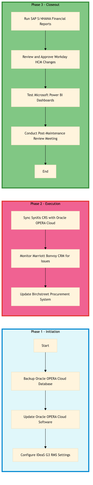

| Role | Steps |
|---|---|
| IT Systems Administrator | 1.1 1.2 2.1 3.1 3.3 |
| Revenue Manager | 1.3 |
| Customer Relationship Manager | 2.2 |
| Procurement Manager | 2.3 |
| Finance Manager | 3.1 |
| Human Resources Manager | 3.2 |
| Step | Name | Role | System | Input | Output | KPI | Dec? | Exc? | Pain Point / Risk |
|---|---|---|---|---|---|---|---|---|---|
| 1.1 | Backup Oracle OPERA Cloud Database | IT Systems Administrator | Oracle OPERA Cloud | Database backup script | Compressed database backup file | Completion within 30 minutes | N | Y | Inadequate storage space for backups |
| 1.2 | Update Oracle OPERA Cloud Software | IT Systems Administrator | Oracle OPERA Cloud | Software update package | Updated software version | Completion within 60 minutes | N | Y | Compatibility issues with existing systems |
| 1.3 | Configure IDeaS G3 RMS Settings | Revenue Manager | IDeaS G3 RMS | Configuration parameters | Configured settings in IDeaS G3 RMS | Completion within 45 minutes | N | Y | Incorrect configuration leading to data discrepancies |
| 2.1 | Sync SynXis CRS with Oracle OPERA Cloud | IT Systems Administrator | SynXis CRS, Oracle OPERA Cloud | Synchronization script | Synchronized data in both systems | Completion within 1 hour | N | Y | Data mismatch between CRS and PMS |
| 2.2 | Monitor Marriott Bonvoy CRM for Issues | Customer Relationship Manager | Marriott Bonvoy CRM | Monitoring dashboard | Issue report and resolution plan | Less than 5 issues identified per day | Y | N | High volume of unresolved customer complaints |
| 2.3 | Update Birchstreet Procurement System | Procurement Manager | Birchstreet Procurement | New vendor list and contracts | Updated procurement system with new vendors | Completion within 2 hours | N | Y | Vendor contract discrepancies |
| 3.1 | Run SAP S/4HANA Financial Reports | Finance Manager | SAP S/4HANA | Financial report templates | Generated financial reports | Completion within 2 hours | N | Y | Data entry errors affecting report accuracy |
| 3.2 | Review and Approve Workday HCM Changes | Human Resources Manager | Workday HCM | Pending HR changes | Approved or rejected HR changes | Completion within 1 hour per change request | Y | N | Delays in processing HR requests |
| 3.3 | Test Microsoft Power BI Dashboards | IT Systems Administrator | Microsoft Power BI | Dashboard templates | Functional and accurate dashboards | Completion within 1 hour | N | Y | Inconsistent data feeds from various systems |
| 3.4 | Conduct Post-Maintenance Review Meeting | IT Systems Administrator, Revenue Manager, Customer Relationship Manager, Procurement Manager, Finance Manager, Human Resources Manager | Oracle OPERA Cloud, IDeaS G3 RMS, SynXis CRS, Marriott Bonvoy CRM, Birchstreet Procurement, SAP S/4HANA, Workday HCM, Microsoft Power BI | Meeting agenda and system status reports | Action plan for identified issues | Completion within 1 hour | Y | N | Poor communication leading to missed issues |
The IT-OP-01 process involves managing and maintaining Oracle OPERA Cloud PMS at a Marriott full-service hotel. This ensures seamless operations, data accuracy, and guest satisfaction.